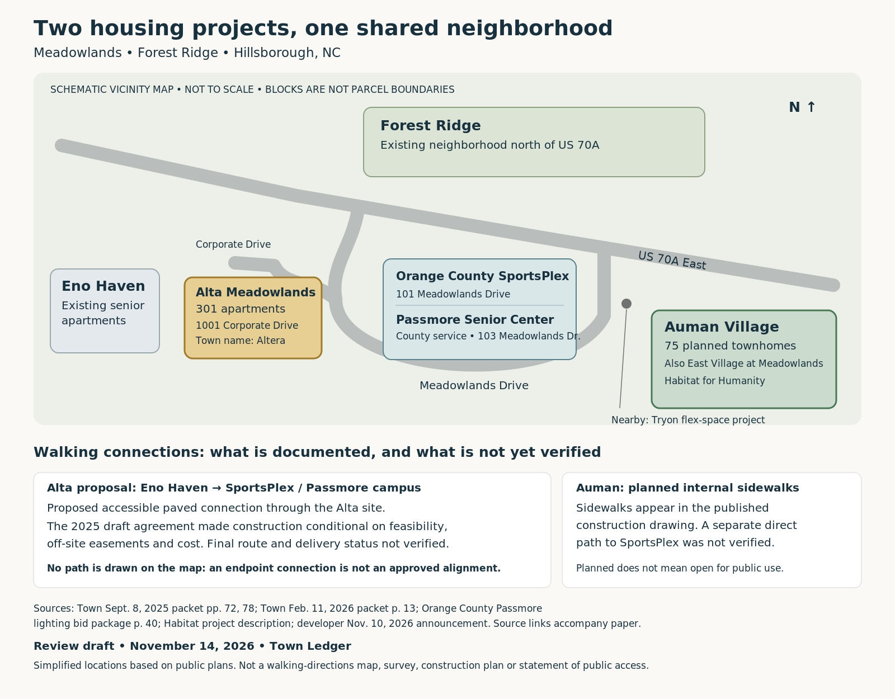

More homes near Forest Ridge
Town Ledger • November 14, 2026
Two developments plan 376 homes near Forest Ridge and the Orange County Sportsplex. For those of us who use US 70A, walk across it or visit the Sportsplex, the question is straightforward: will the roads, schools and services be ready when people move in?
The Town has been planning for growth. The big housing decisions have already been made. Now the question is how these projects fit with everything else nearby, and whether the improvements will be ready in time.
What is coming
Alta Meadowlands plans 301 apartments at the former Duke Health property on Corporate Drive. Ten percent are to be reserved for households meeting income limits. Nearby Auman Village, also called East Village at Meadowlands, plans 75 Habitat townhomes: 60 traditional Habitat homes and 15 for a higher income range. These are homes to buy, not free housing. [1–3]
Auman’s infrastructure work began in 2025; Habitat expects construction of the homes themselves to start in the second half of 2027. Tryon, at 640 Meadowlands Drive, is a separate commercial project. Town records described it as under development in February 2026. A broker brochure targeted completion in the third quarter of 2026, but completion and the businesses that will occupy it have not been confirmed in the records reviewed. The 376-home total excludes Tryon. [2–3,10]
Approved does not mean finished
The Town approved Alta’s rezoning and development agreement in September 2025. Auman’s housing approval dates to 2020, with revised construction drawings and permission for grading and site work in 2025. [3–4]
So the projects can move ahead. But that does not mean every permit is in place or every improvement is finished. Most later reviews check that the plans meet the rules. They are not another vote on whether to build the homes.
What happens when you put it all together
For Forest Ridge, this is about everyday trips, not just a number of new homes. I find the left turn onto US 70A difficult when traffic is heavy, and walking across can feel unsafe. My family has also noticed crowded classes and full parking at the Sportsplex. These are personal observations, not a traffic study or a formal count of available space.
The Town has looked at future sewer needs and requires reviews for individual projects. What I have not yet found is a clear, up-to-date picture of what these two developments mean together, including busy travel times and peak activity at the Sportsplex. That is a reason to ask for the final studies, not to assume there were none. [3,5,8]
Who pays matters too
Alta’s draft agreement calls for the developer to contribute about $1.83 million toward sewer work. That helps, but the wider Cates Creek project also needs borrowing and other funding. Most of the developer’s contribution is already included in that plan. [5–6]
Auman has support from both Town and County taxpayers. The Town has committed $400,000, scheduled as $100,000 a year for FY2026–FY2029. County records list an $800,000 allocation and a later $175,000 reallocation; these are shown separately pending confirmation of how they fit together. Will the additional tax revenue cover the added cost of serving these developments? [2,6–7,9]
What can you do?
Ask Town Planning these three questions:
What is still awaiting approval, and when can residents comment?
Do the studies include both projects, other nearby growth, turning delays and safe crossings of US 70A?
What improvements are required, who pays, and when must they be ready? What about busy class times, events and Sportsplex parking?
I would specifically ask how the striped crossing near the Prestwood Drive entrance is being considered. School capacity and water and sewer still matter too.
What are we missing
Forest Ridge neighbors: what are you noticing, and what have I missed? Send questions or concerns to hello@townledger.org. Town Ledger will bring the main questions together, submit them to Town leaders and share periodic updates as answers and new information become available. I will summarize the themes rather than publish individual messages.
Follow the evidence
1 Alta announcement • 2 Habitat plans and timing • 3 Auman and Tryon staff report • 4 Alta approval minutes • 5 Alta draft agreement • 6 Town Ledger funding schedules • 7 County housing investment summary • 8 Town sewer growth model • 9 County October 2026 funding action • 10 Tryon leasing brochure
A look around the neighborhood
Here is where the projects sit in relation to Forest Ridge, the Sportsplex and Passmore Center. This is a simplified guide, not a street map to follow.

A walking connection through Alta has been proposed, but its final route and completion are not verified. Auman’s plan shows sidewalks within the development. Neither should be read as a path that is already open.